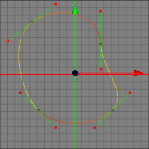
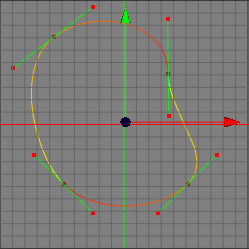

セグメントを分ける ツール
スプライン曲線を２つに分けなければならない場合がよくあります。そのためにセグメントを分けるツールを使用します。１つのベジェ曲線が２つの別々のスプラインに分かれている画像を見てください。
 

２つ目のスプラインの色を見てください。２つ目のイメージでは、セグメントを分けるが実行された後に、
スプラインの色によって２つのスプラインに分かれている事がわかります。
注意: １度に１回の分割しかできません。
編集モード
セグメントを分ける は全ての編集モードで使用できます。ポイントモードでしかコントロールポイントや選択範囲が見えないので、ポイントモードで使用するのが良いでしょう。このスプラインツールは、ロースプラインオブジェクトでのみ使用できます。


セグメントを分ける ツールを使用するには、まず分割するコントロールポイントを選択します。次に、"ツール スプラインツールセグメントを分ける" メニューコマンドを適用します。選択したポイントのスプラインが２つに分割しました。１度に１分割しかできない事に注意してください。
スプラインツールセグメントを分ける" メニューコマンドを適用します。選択したポイントのスプラインが２つに分割しました。１度に１分割しかできない事に注意してください。
補助キー
-
- なし
プロパティ
- なし